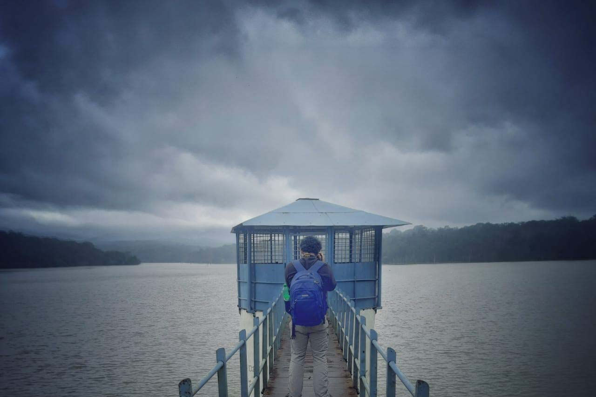
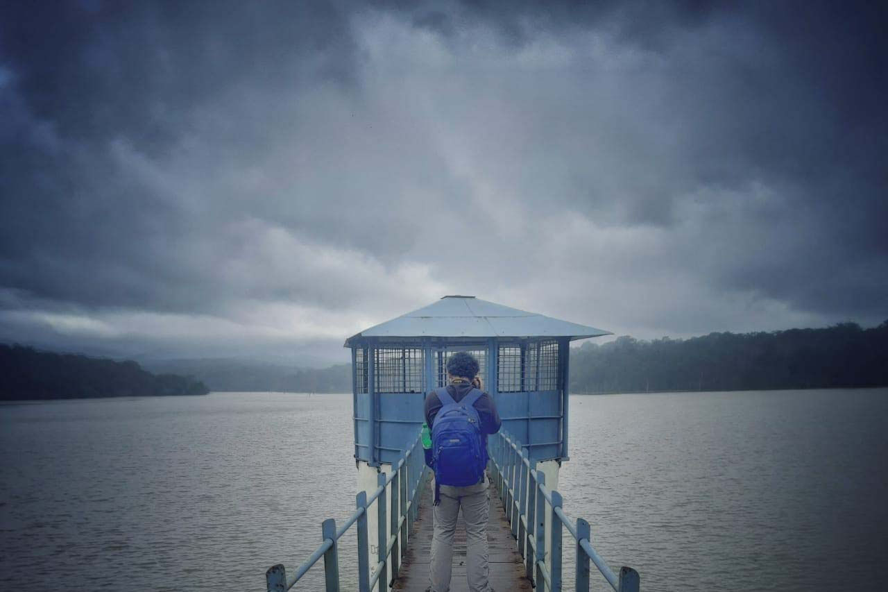
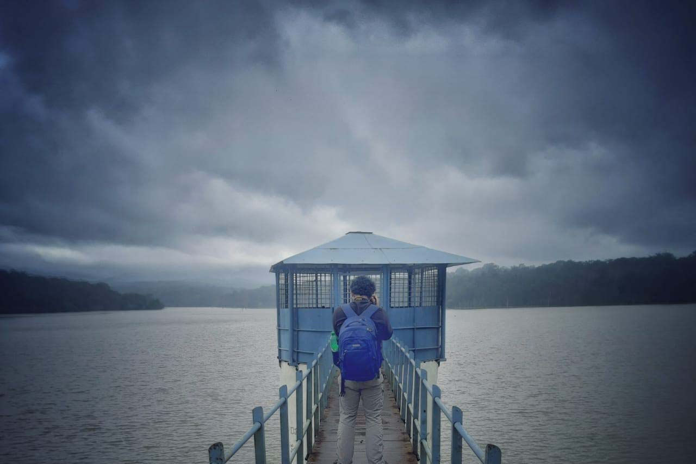

Bavarian Research Institute of
Experimental Geochemistry and Geophysics (BGI)
University of Bayreuth
e-mail :
jyotirmoy.paul@uni-bayreuth.de

Bavarian Research Institute of
Experimental Geochemistry and Geophysics (BGI)
University of Bayreuth
e-mail :
jyotirmoy.paul@uni-bayreuth.de
Research Associate, IISc, Bangalore (July 2021 - October 2021)
PhD, IISc, Bangalore (2015- 2021)
Supervisor :
Prof. Attreyee Ghosh
M.Sc, Applied Geology, Jadavpur University 2015.
B.Sc, Geology, Jadavpur University, 2013.
2. Dynamics of lower mantle due to grain-size dependent rheology
1. Origin, evolution and destruction of cratons
Effect of grain-size dependent rheology in Earth's evolution
In peer reviewed journals
5. J. Paul, A. Ghosh, 2021. Could the Reunion plume have thinned the Indian craton?,
Geology, [Online version]
4. J. Paul, A. Ghosh, 2020. Evolution of cratons through the ages:
A time-dependent study, Earth and Planetary Science Letters
[Online Version]
3. J. Paul, S. Mondal, R. Koyal, D. Sarkar, 2019. Burrow morphology of
the ocypodid crab Ocypode ceratophthalma at Chandipur Coast, Eastern India and
its implications. Current Science .
[Online version]
2. J. Paul, A. Ghosh, C.P. Conrad, 2019. Traction and strain-rate at the
base of the lithosphere: An insight into cratonic survival. Geophysical Journal International.
[Online version]
[Erratum]
1. A.S. Baidya, J. Paul, D.C. Pal, and D. Upadhyay, 2017.
Mode of occurrence and geochemistry of amphibole in the Kolihan-Chandmari copper deposits, Rajasthan, India: Insight into the ore-forming process. Ore Geology Reviews.
[Online Version]
Conference Presentations
15. J. Paul, A. Ghosh, 2021. Effect of the reunion plume eruption on the Indian craton thickness.
6th Rock deformation and structures, virtual mode.
14. J. Paul, A. Ghosh, 2021. Interaction of the Indian craton with the Reunion plume.
EGU General Assembly, Viena. [Online version]
13. J. Paul, A. Ghosh, 2020. Understanding deformation of cratons in presence of mid-lithospheric discontinuity.
EGU General Assembly, Viena. [Online version]
12. J. Paul, A. Ghosh, 2020. On survival of cratonic lithosphere. 36th International
Geological Congress, Delhi.
11. J. Paul, A. Ghosh, 2019. Evolution of cratons in time-dependent mantle convection models.
AGU Fall Meeting, San Francisco
[Online version]
10. A. Ghosh, J. Paul, Effect of Weak Mid-lithospheric Discontinuities on the Survival of Cratons.
AGU Fall Meeting, San Francisco.
[Online version]
9. J. Paul, A. Ghosh, 2019. Time dependent 3-D numerical modeling of the cratonic evolution.
Ada Lovelace Workshop, Siena, Italy.
[Online version]
[Poster]
8. J. Paul, A. Ghosh , 2019, Evolution and survival potential of cratons:
A numerical study. IUGG General Assembly, Montreal.
[Online version]
7. J. Paul , A. Ghosh, 2018, Stability of cratons since early Phanerozoic.
AGU Fall Meeting, Washington DC.
[Online version]
[Poster]
6. A. Ghosh, J. Paul , C.P. Conrad, 2018, The Relation Between Tractions and Strain Rate at the Base of the Lithosphere:
Key to Understanding Cratonic Stability.
AGU Fall Meeting, Washington DC.
[Online version]
[Poster]
5. J. Paul , A. Ghosh, 2018, Variation of traction and strain rate
with lithospheric thickness: An insight into understanding cratonic stability. EGU General Assembly,
Vienna. [Online Version] [Poster]
4. J. Paul, A.S. Baidya, and D.C. Pal, 2015, Origin of alternate
amphibole and quartz rich bands in amphibole bearing quartzite from North Khetri Copper Belt, Rajasthan, India, AGU Fall Meeting, San Francisco, V23B-3161
[Online Version]
3. A.S. Baidya , J. Paul, and Pal D. C., 2014, Multiple stages of
amphibole formation in the Chandmari Cu-deposit, Khetri copper belt, Rajasthan:
implications for changing fluid composition vis-à-vis sulfide mineralization, National Conference on Making of the Indian Continent, Presidency University, Kolkata.
[RG pdf]
2. J. Paul, 2014, Diversity of Indian climate and its effect on Indian
music, 3 rd YES Congress, Dar Es Salaam, Tanzania Abstract Volume
1. J. Paul, and S. Mondal, 2013, Ecological significance of Ocypode
crab burrows: A case study from Chandipur, Eastern Coast of India, National
Conference on Earth Science in India: Challenges and Emerging Trends, Indian
Institute of Technology, Roorkee, Abstract volume.
4. Cratons, Why Are You Still Here?, 2021 American Geophysical Union, Eos
[Link]
3. 2021: 100th year of the craton concept and beyond, 2021, European Geoscience Union, Geodynamics divsion
[Link]
2. How did the Oldest Part of the Earth Still Survive Today, AWSAR Scheme, Department of Science and Technology, India
1. EGU 2018: Experience of a first time attendee, European Geoscience Union, Geodynamics division
[Link]
4. Geoscience in the third world, 2020, European Geoscience Union, Geodynamics divsion
[Link]
3. Status of academic freedom, 2019, Confluence, Indian Academy of Science
[Link]
2. The Forgotten Tomb: Inspiration of the Taj Mahal, 2018, Coldnoon
[Link]
1. Celebrating scripts from around the world, 2018, IISc Connect
[Link]
7. ভারত মহাসাগরের গর্ত: পর্ব ৩: Super plume, 2021, Geoscience Education
[Link]
6. ভারত মহাসাগরের গর্ত: পর্ব ২ (Geoid Anomaly), 2021, Geoscience Education
[Link]
5. ভারত মহাসাগরের গর্ত: পর্ব ১, 2021, Geoscience Education
[Link]
4. লাভার উৎস সন্ধানে, 2021 বিজ্ঞান
[Link]
3. পৃথিবীর প্রাচীন পাথর গুলির জীবনযাত্রা, 2021, September বিজ্ঞান কথা, Vigyan Parisar, Govt. of India p. 14-15
[Link]
2. ব-দ্বীপের বহিঃপ্রকাশ, 2021 এ লেভেলে' বিজ্ঞান
[Link]
1. পৃথিবীর গভীর কথা, 2020 বিজ্ঞান
[Link]
 Orchid
Orchid